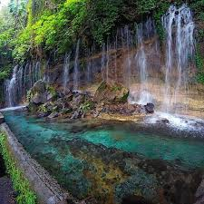
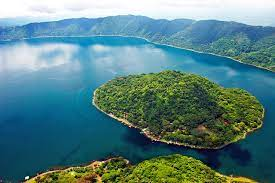

zoologico furesa

Fundación Refugio Salvaje Ubicado en 220 manzanas, en Jayaque, a solo 30 minutos de San Salvador. FURESA alberga más de 100 ejemplares de 31 especies en peligro de extinción.
juayua

Juayúa es un pequeño poblado de El Salvador, localizado en la ciudad de Sonsonate. Ubicada a 80 kilómetros al oeste de San Salvador, su clima es fresco y agradable debido a las montañas que la rodean.
lago de coatepeque

es uno de los lugares turísticos más hermosos que puedes visitar en El Salvador. Este lago cuenta con una gran extensión en la que puedes practicar varios deportes, además de su belleza